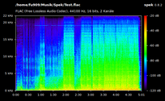
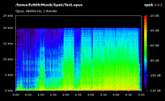
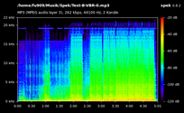
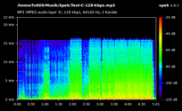

Spek
Dieser Artikel wurde für die folgenden Ubuntu-Versionen getestet:
Ubuntu 16.04 Xenial Xerus
Ubuntu 14.04 Trusty Tahr
Zum Verständnis dieses Artikels sind folgende Seiten hilfreich:
Spek  ist ein kleines Programm zur Anzeige des akustischen Spektrums von Audiodateien mittels Berechnung des zugehörigen Spektrogramms (Sonagramm). Dies kann beispielsweise zur Frequenzanalyse von Audioaufnahmen recht nützlich sein.
ist ein kleines Programm zur Anzeige des akustischen Spektrums von Audiodateien mittels Berechnung des zugehörigen Spektrogramms (Sonagramm). Dies kann beispielsweise zur Frequenzanalyse von Audioaufnahmen recht nützlich sein.
Das Programm wird von Alexander Kojevnikov entwickelt und für verschiedene Betriebssystem-Plattformen angeboten. Der Programmname stellt einen Bezug zur Programmfunktion her, nämlich der Erstellung eines Spektrogramms, bezieht sich laut Aussage des Entwicklers allerdings gleichzeitig als Wortspiel auf die niederländische Bezeichnung für "Speck". Spek wird unter der GNU General Public License (GPL) herausgegeben.
|  |  |
| test.flac | test.opus |
|  |  |
| mp3 mit VBR=0 | mp3 mit 128 kbps |
Merkmale:
Unterstützung aller bekannten Audioformate mittels der FFmpeg-Bibliotheken
besonders schnelle Analyseberechnung
Anzeige zusätzlicher Datei-Informationen wie Codec-Bezeichnung, Kodierungsparameter usw.
Spektrogramm kann als Bilddatei gespeichert werden
Unterstützt Drag'n'Drop
Übersetzt in über 20 Sprachen
Noch mehr Funktionen bieten Friture (siehe auch friture ) oder das in den offiziellen Paketquellen (seit Ubuntu 12.10) enthaltene Programm Sonic Visualiser .
Installation¶
Folgendes Paket muss installiert [1] werden:
spek (universe)
 mit apturl
mit apturl
Paketliste zum Kopieren:
sudo apt-get install spek
sudo aptitude install spek
Benutzung¶
Bei Verwendung einer Desktop-Oberfläche, welche ein klassisches Anwendungsmenü bereitstellt, erscheint das Programm nach der Installation unter dem Punkt "Multimedia" bzw. "Unterhaltungsmedien"[2].
Über das nach Programmstart erscheinende Hauptfenster lässt sich das Programm sehr unkompliziert bedienen. Mittels der Schaltfläche "Öffnen" oder per Drag'n'Drop kann eine Audiodatei hinzugefügt werden. Das Programm berechnet unverzüglich das Spektrogramm und zeigt es im Fenster an. Der Maßstab der Anzeige (Skalen für Zeitdauer, Frequenzen und spektrale Dichte) wird vom Programm automatisch an die Gegebenheiten der Audiodatei angepasst.
Über die Schaltfläche "Speichern" kann das berechnete Spektrogramm im Bildformat PNG abgespeichert werden, um beispielsweise für weitere Analysen zur Verfügung zu stehen.
Einstellungen¶
Im Einstellungsfenster, welches über das Menü "Bearbeiten -> Einstellungen" zugänglich ist, kann lediglich die Spracheinstellung für das Programm vorgenommen oder festgelegt werden, ob das Programm im Internet nach Aktualisierungen suchen soll.
Da das Programm sich noch in einem frühen Stadium sowie in reger Entwicklung befindet, sind die Unterschiede zwischen den einzelnen Versionen durchaus erwähnenswert. So ist ab Ubuntu 13.04 (Spek Programmversion 0.8.1) die Möglichkeit hinzugekommen, die Maßstabs-Skala für die Dynamik anzupassen. Mittels der Tastenkombination Strg + ↑ bzw. Strg + ↓ lässt sich die untere Grenze des Dynamikumfangs (in dB FS) verschieben und anpassen, mittels Tastenkombination Strg + ⇧ + ↑ bzw. Strg + ⇧ + ↓ die obere.
Die Programmkonfiguration befindet sich in der Datei ~/.config/spek/preferences.
Tastenkürzel¶
Das Programm verfügt nur über wenige Tastenkürzel, welche als alternative Steuerungsmöglichkeit angewendet werden können:
| Übersicht über die Tastenkürzel | |
| Funktion | Tastenkürzel |
| Neue Audiodatei öffnen | Strg + O |
| Spektrogramm als PNG-Bilddatei speichern | Strg + S |
| Einstellungsdialog zeigen | Strg + E |
| Informationen über das Programm anzeigen | F1 |
| Programm beenden | Strg + Q |
 Programmübersicht
Programmübersicht- Erstellt mit Inyoka
-
 2004 – 2017 ubuntuusers.de • Einige Rechte vorbehalten
2004 – 2017 ubuntuusers.de • Einige Rechte vorbehalten
Lizenz • Kontakt • Datenschutz • Impressum • Serverstatus -
Serverhousing gespendet von